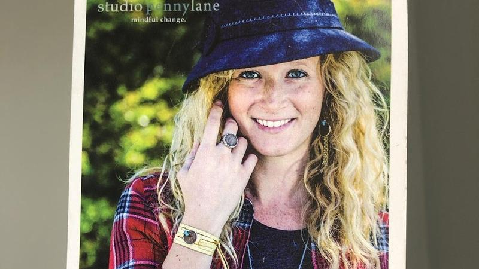

TapePhoto
@tapephotocom
Fotografía profesional en La Serena y Coquimbo.
Enlaces

Última guíaFotografía para fundaciones y ONG: qué esperar del procesoBlog
- Fotografía para fundaciones y ONG: qué esperar del proceso
 Errores comunes en fotografía aérea: cómo no desperdiciar el vuelo
Errores comunes en fotografía aérea: cómo no desperdiciar el vuelo Fotografía en cervecerías y destilerías: errores que ahuyentan clientes
Fotografía en cervecerías y destilerías: errores que ahuyentan clientes- Paisajes en blanco y negro para decorar hoteles y oficinas
- Sesión mensual de fotos: cómo tener contenido propio para redes
 Fotos nocturnas y de hora azul para hoteles y restaurantes
Fotos nocturnas y de hora azul para hoteles y restaurantes- Inventario fotográfico al entregar o recibir un arriendo
- Fotos para un estudio de abogados o contadores